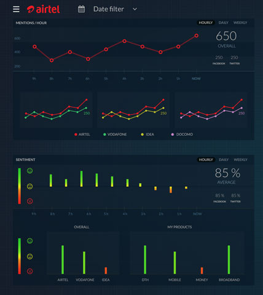
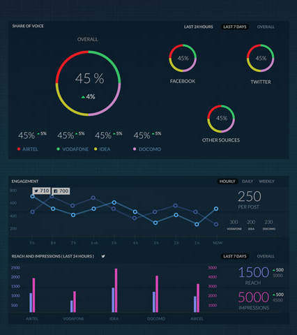
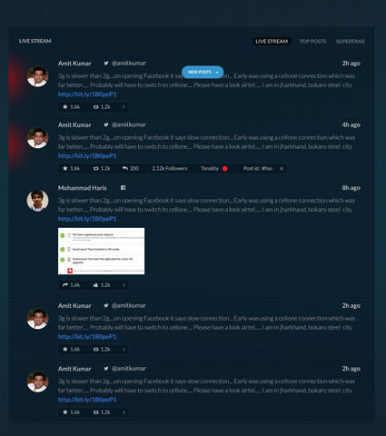
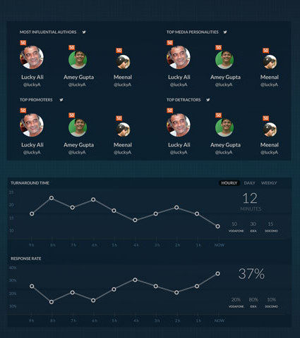
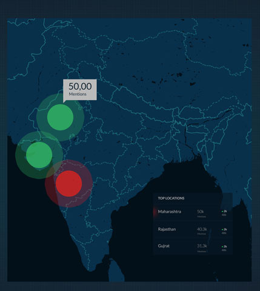
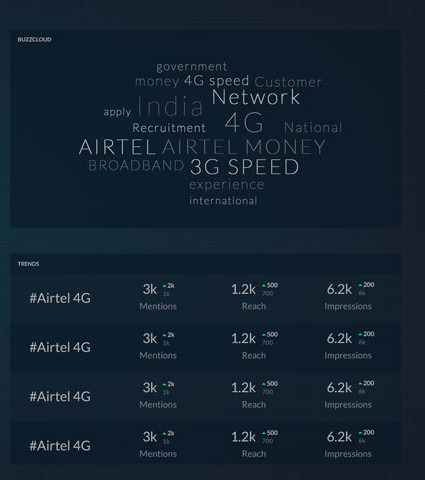

“Big data is your friend”
One of india's largest telecom company, Bharti Airtel, approached Germinait with an a challenging problem. Using the Germin8 Social Intelligence (GSI) suite for tracking their social media presence, they recieved thousands upon thousands of mentions a day. Analyzing and drawing inference from this mountain of data required precious time... time that could instead be used use to act rather than react. As it always has been, in the world of social media, only the fastest survive. They needed a way they could get realtime analysis of this data, where a dedicated team could track and monitor all the various aspects of their brand's health on social media and identify emerging pattens or trends in real time.
A video wall comprised of 12, 50" Television screens
This was the initial design that was drawn up. The approach was simple. One metric -> One screen.
This allowed us to display all the data that we had related to a particular metric. That meant no information would be lost, and would essentially mean you could really drilldown into the specifics of a particular metric to understand what’s going on.
There was just too much data!! It was impossible for one person to be able to scan all the screens and try to make sense of it.
You had to focus on one screen only to make out what was happening in there… and in the meantime you could completely miss something happening on some other screen.
It just wouldn’t work… so it was back to the drawing board.
While approaching the problem for the second time, we decided to structure the information such that, it reads like a book. Start from the left, and continue towards the right to find out what that story is.
Initially, the user is presented with a higher level view of the brand, and as the user continues to read, the data starts to get more detailed and more specific.
A massive video wall, 4 feet high and 22 feet wide, The Social media command center is comprised of 12, 55" LED TVs, and is housed at the heart of the company's headquarters, where a dedicated team of experts representing various departments monitor all of the company's social media data in real time.
We spoke our potential users at Airtel, and after studying the inner workings of their current social media management system, We gained a better insight into their needs and requirements. Based on this data, we determined that there are three major use cases for this tool:
Business as usual : Just another day at the office.
Campaign management : Monitoring any campaigns the company might have running at the time.
Crisis management : All hands on deck!!
The next major problem to tackle was making the data actionable. Data is meaningless if there's nothing you can do about it. So we went to the roots and studied the assets available at Airtel's disposal, that the company can deploy during times or crisis, promoting campaigns, or just everyday brand promotion. These assets range from social media Influencers, Bloggers, Journalists and loyal customers who act as Brand advocates.
Just like reading a book, you start at the left. Mentions and Tonality give the user an overview of the brand's health on social media. It answers general questions such as:
How many mentions has my brand gotten?
Are these mentions good or bad?
As we move further along, we delve deeper into the data, answering more specific questions like:
How many people are talking about me?
How many people are talking about me?
Where are they from?
What are the trends common in these conversations?
Are there any influencers talking about me?
In an age where competition is fierce, it pays to know what your rival is up to at all time. At every step of the way, at every single data point, we run a realtime comparison with top competitor brands. This enables the company to always be one step ahead of the competition.